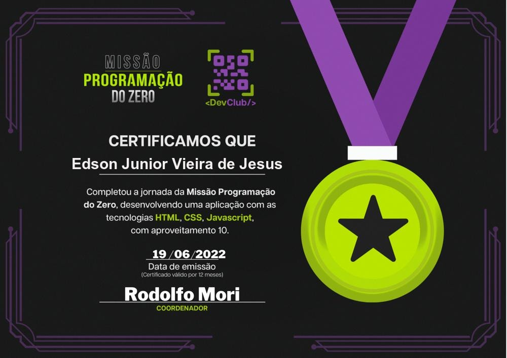

Prazer me chamo Edson Junior, tenho 18 anos e atualmente estou cursando o 3° ano do ensino médio. Moro em Ibirité- Mg. No meu tempo livre gosto de estudar sobre programação, jogar é escutar musica para dispertar minha mente, (tambem escuto musica para programar).
Trabalhei na empresa Embrepar do Brasil - Eirelli no setor administrativo, mas tambem atuava no setor de recepção da loja atendendo clientes na loja, embalando pedido dos clientes e conferindo peças automotivas. Nesta empresa fiquei por um ano trabalhando e fazendo curso no Senac - Contagem e foi a unica empresa que trabalhei.
Minha maior expectativa e realidade na programação e aprender a fazer aplicativo para celular, não so na area do mobile mais tambem na area de emuladores. Não tenho muita experiencia na programação pois aprendi um pouco de programação com meu professor Rodolfo Mori. Ele explicou para o pessoal que estava online junto com ele ao vivo no youtube sobre programação e assim fizemos nosso primeiro projeto que foi um cronometro.
Segue abaixo meu certificado do missão programação do zero
